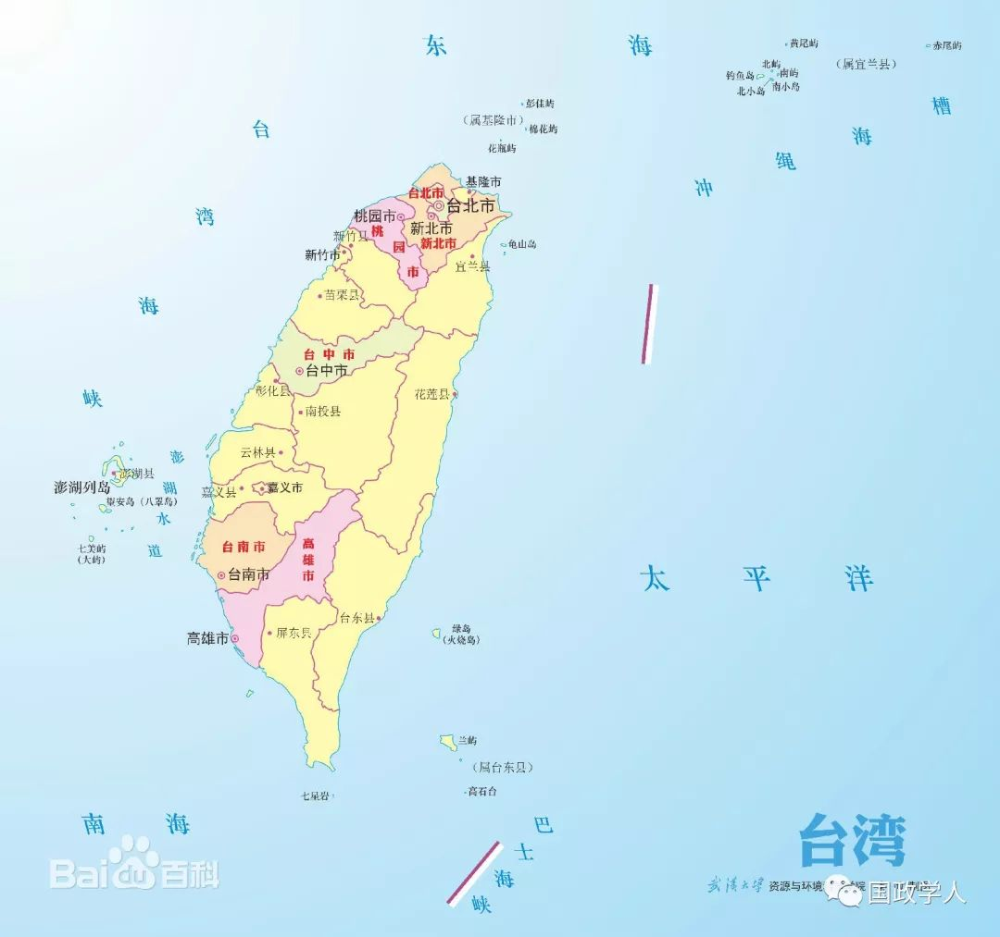
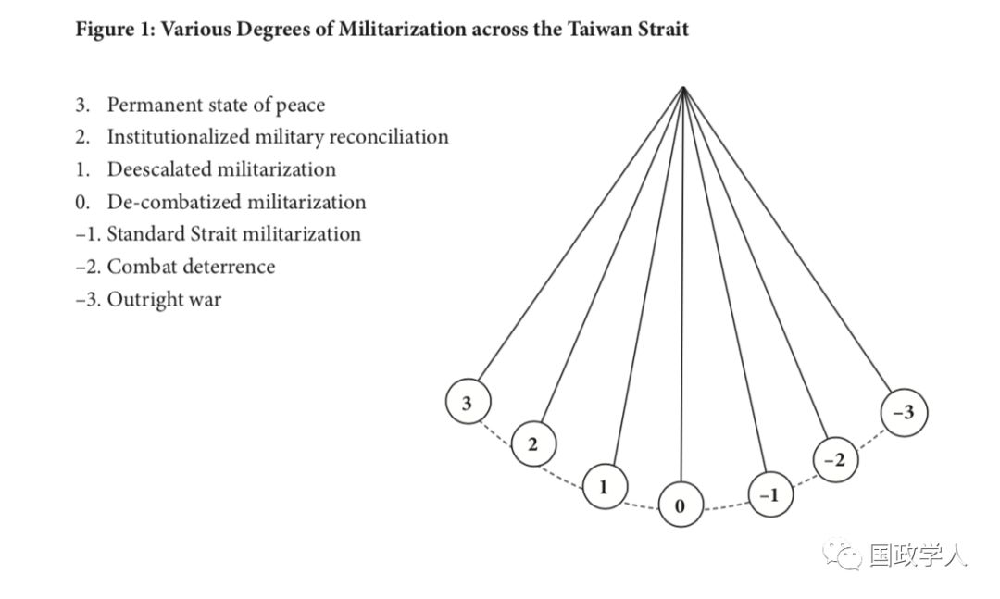
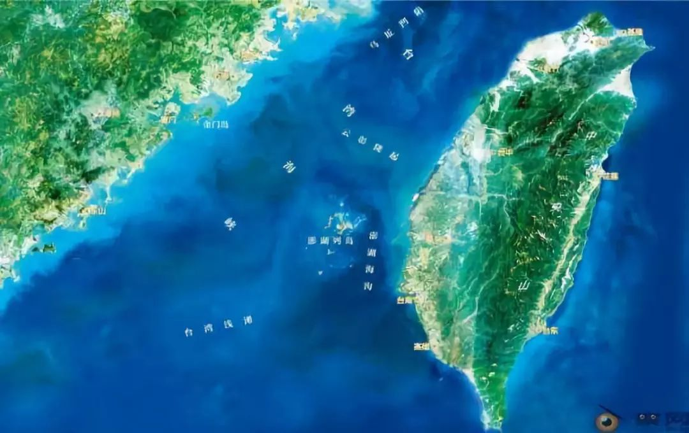

收录于合集

简 介
【 作者 】
由冀，澳门大学社会科学院政府与行政系学系教授，研究领域中国政治与政府；解放军研究；中美、中日、中俄关系等。
郝雨凡，澳门大学社会科学学院讲座教授，中国历史文化中心主任，博士生导师。多年从事国际关系、中美关系、决策学、腐败理论及澳门社会发展等研究出版多部中英文学术专著和编著.
【 编译 】
扎西旺姆
【 校对 】
庞林立
【 来源 】
China Review Vol. 18, No. 3, SPECIAL ISSUE: Washington-Taipei Relations at a Crossroads (August 2018), pp. 89-120
【 期刊简介 】
** The China Review** (《中国评论》)是香港中文大学出版社自1990年以来每年出版的刊物。自2001年以来，每年4月和10月出版两次。期刊中既涵盖了研究国内政治和国际关系等的学术文章又包括社会、商业、经济发展、现代历史及艺术和文化的相关研究成果。它是中国唯一一本专门研究中华的英文期刊。
【 提纲 】
核心观点
两岸军事化的概念化
大陆对台文武战略中主导的政治方针
马英九领导时期的军事缓和：迎来转折
大陆加强战事准备 反对蔡英文台湾执政
两岸军事化及动荡不安的三方关系
结论
**【声明】
**
本周，国政学人微信公众平台将系统编译SSCI“台湾专题”系列文章。编译目的是 让我们更直观了解境外学者是如何看待和分析台湾问题的，文章观点不代表国政学人观点。
核心观点
自2016年来，台湾问题不断升温。笔者认为，尽管战争话题一直饱受热议，两岸政治经济关系的核心仍在于寻求如何避免军事对抗。本文将通过分析大陆对台政策，台湾方面回应及美国的参与，重新审视两岸的政治军事关系。当中美权力斗争激烈及“一中原则”失去其影响力时，三方关系的军事化倾向会更加明显。台湾局势的动态转变将会决定其军事化冲突程度。两岸实际的对抗状态说明中国大陆、美、中国台湾三方目前最需要解决的问题是战争状态中的和平诉求，而不是寻求统一或者独立。因此笔者认为，就两岸关系而言，政治考量主导着中美台三方的军事策略。

文章导读
** 两岸军事化的概念化**
两岸的军事冲突是中美博弈及动荡不安的国内政治局势所导致的。或者说，两岸的政治分歧导致了军事紧张，并刺激了军事化程度升级。
a. 从政治角度概念化两岸军事化问题
界定军事化行为本身便是出于政治目的的。笔者认为，使用武装力量是国家大政方针的延续，是在理性的政策考量下为达成国家的外交政策目标所采取的必要措施。1979年中国大陆承诺以和平为主的对台政策调整就是在中美苏关系格局转变中为达成中美外交合作所做出的理性决策。就台湾问题而言，军事化是动态的政治与军事相互作用的过程。在这一过程中，军事化状态虽可进一步发展为武装对抗，但其程度却被两岸避免战争的共同愿望所削弱。美国限制着两岸可进行军事行为的范畴，在此限制之下，中国大陆的对台政策调整为通过战争威胁来实现和平诉求。大陆避免战争的真诚意愿体现在“解决内部安全、经济发展以及直接外部威胁问题优先于统一进程”的对台政策中。从这个角度来看，政策方针主导着军事部署行为。
b. 海峡两岸战争和平矩阵的概念化
一般来说，军事化行为意味着进攻性的武装力量结构及其态势。武器现代化是应特定目标及战争类型要求而进行升级的。在台海冲突的背景下，这些防御特点对解放军的备战工作具有显著的借鉴意义。然而，如果备战是大陆对台政策方针的方式之一，它的结构就是由微妙的分层组成的，内嵌在分层中的因素随着钟摆般的度量指标而左右摇摆。（见图1）。

最右端（-3）是战争全面爆发状态，指两军发生直接武装冲突。最左端（3）的是两岸的永久和平状态。靠近右端（-2）是高度警戒状态下的武力威慑。这是一种由战争压力不断加剧所显示的对战状态，介于战争与和平之间。这个参考点左上方的是在政治和解的情况下以常规部队部署主导的非战斗军事化（中间点0）状态。其左边（1）是一个相对缓和的军事化水平，通过建立军事互信机制（CBMs），防止双方挑衅行为。再左一些（2）是体制化的军事调解状态，无常规部队部署及定期官方的军事接触行为。显然，这些指标并未囊括两岸军事化的所有可能情况。摆锤经历了陈水扁执政期间的高度警备军事状态至马英九期间的非战斗军事化水平的转变。自2016年蔡英文执政以来，摆锤再次开始向右偏移，其速度更多地取决于民主党推动“去中国化”的进程。美国也通过其在“一中”政策的不明确立场从根本上影响着钟摆的走向。
** ** 马英九领导时期的军事缓和：迎来转折****
中国大陆对台的文武策略在“使用军事手段达成政治目的”的框架下， 就台湾的政治形势变化灵活调整应对。其政策调整周期随台湾周期性选举及美国施加压力的阶段而变动。
a. 中国人民解放军作为军事缓和时期的主要受益者
政治调解是两岸关系缓和的第一步，通过确认双边的和平诉求，有效减少双方对于战争的恐惧。马英九八年执政下的军事缓和状态符合大陆军方的战略利益。台湾是中美冲突的直接导火索。在两岸共同努力下，其紧张局势得到缓解，使中国大陆有更多的精力来加速军事力量转型与武器开发，同时也为大陆政府提供了更多空间，用于处理其他领域的领土争端问题。此外，这也反映了两岸对于武力解决台湾冲突的心态变化，即在双方可接受的底线下，并不一定需要通过战争威慑来完成彼此的和平诉求。
b. 军事紧张局势缓和及解放军的战略态势
马英九时期政治调解受岛内政治及美国干预影响，并无实质进展，两岸没有建立切实有效的互信机制。然而即便在互信程度较低时，双方共同努力缓解紧张局势的行为仍可以在一定程度上加强军事意图及计划的可预测性。解放军为达成政治调解，采取了一系列措施维持非战斗态势的军事化水平。在驻防部署、军事部署及战斗部署这三种战略态势之间，作者认为解放军在台湾前线的部署更接近一种按需作战部署的定义，既可以直接升级到战斗部署，也可以降级为驻防部署。因此本文认为，虽然马英九时期两岸对峙态势短暂缓和，但并未解决两岸军事紧张局势的核心问题——缺乏政治互信。
** ** 大陆加强战事准备 反对蔡英文台湾执政****
民进党的重新执政推动了大陆重新调整对台政策，恢复了其军事对策的内容。习近平主推的“斗而不破”规划限定了解放军的行动方针，即将军事压力提升至战斗威慑水平，但不至于到达实质性的战斗军事紧张状态。
a. 政治背景
中国大陆对蔡英文拒绝“九二共识”行为的态度明确，申明了其阻止民进党推动台湾独立的政治决心，也侧面表达了对国民党的支持。长远角度来说，大陆理解两岸关系牵扯较广，一昧的断绝两岸关系可能会对两岸人民造成巨大损害，因此大陆保留了两岸非官当渠道的交流空间。然而，大陆施行处罚政策的应对模式可能会刺激在白宫和国会的“台独”支持者，从而进一步抑制三方互动，不利于大陆对台政策和中美关系发展。从中期来看，中方更多地担心民进党推动“去中国化”，而不是法律上的独立。大陆在反对分裂主义行动方面处于弱势地位，一方面经济惩罚或军事压力都无法扭转分裂趋势，而这些举动也不至于发动战争，另一方面战争反而只会加速“台独”趋势，破坏中美关系。
b. 大陆以加强军事威慑为对策
大陆并不会任由去中国化趋势发展下去，反之，其试图通过武力威慑抑制这一趋势。将这一转变定义为两岸敌对状态可能为时尚早，双方进行战斗威慑的同时，可能不可避免地导致两岸军事化水平升级，但双方的军事部署并无明确的战斗意图。两岸军事对抗升级的同时，也不可忽略美国的因素。美国的干预体现出显著的政治战略意义，进一步表明了政治考量所引导的军事战略行为。即使美国对解放军的干预是间接的，台湾也可能获得美国某些形式的军事支持。中方的对应措施依旧是武力威慑，而决非战斗意图。即使两岸政治和解结束，这并不意味着军事紧张局势将升级为可战斗水平。
** ** ** ** 两岸军事化及动荡不安的三方关系********
a. 美国主导的三方关系及备受质疑的一个中国框架
两岸关系本质上是三边关系，因为美国是台海冲突的关键决定因素，更确切地说是美国的军事干预政策。美国的深度介入阻挠了大陆的统一进程，同样也成为台湾方面寻求合法独立的障碍。美国在三方互动的中心地位源于美国对一个中国原则的承诺，然而这一框架在不断变化的中美互动中正失去其控制力。其次，地缘政治中实质性的权力转移已经逐渐改变了当前美国制定台湾政策所依据的基本参数。美国现将中国作为竞争者的零和博弈思想也使中美关系逐渐走向临界点。适当干预台湾冲突可以最大化美国在中美互动方面的收益，然而，中方不会放任美国随意动摇一个中国原则。
b. 三边关系的不断军事化
中美博弈的背景下，尤其是在特朗普执政期间，部分军事方面的对华遏制政策越来越明显。与此同时，美国一直向台湾提供军事支持及对台军售。大陆指出美国对台军售侵犯中国的主权，这从根本上与美国利益冲突。对中国大陆而言，军事方面是中美关系全局发展中的弱项，并且随着地缘政治权力转移的不断深化，中美军事关系可能会进一步恶化，并陷入安全困境。
** ** ** ** ** ** 结论************
“中美台”三边关系的发展已经步入未知领域。解放军的对台军事行动根本上是出于政治目的，即阻止中国台湾寻求合法独立的同时，储备力量以实现祖国统一。因此可以看出，中国大陆的军事目标服务于具有明确优先秩序的政治目标：国内的稳定局势、可合作的中美关系，以及国家主权问题。除非主权问题受到严重挑战，否则战争仍然是中国大陆对台政策中低优先级的选择。台湾方面也受到相似的政治和经济制约。一个关键的不确定因素是，在美国将中国视为同水平的战略竞争对手的背景下，美国将如何利用台海冲突来制衡中国。

扫描下方小程序码查看原文p df
本文由国政学人微信公众平台编译首发
更多阅读
国政学人 （ID：guozhengxueren)
为方便学人及时阅读高质量文章
别忘把国政学人设置 星标 哦~